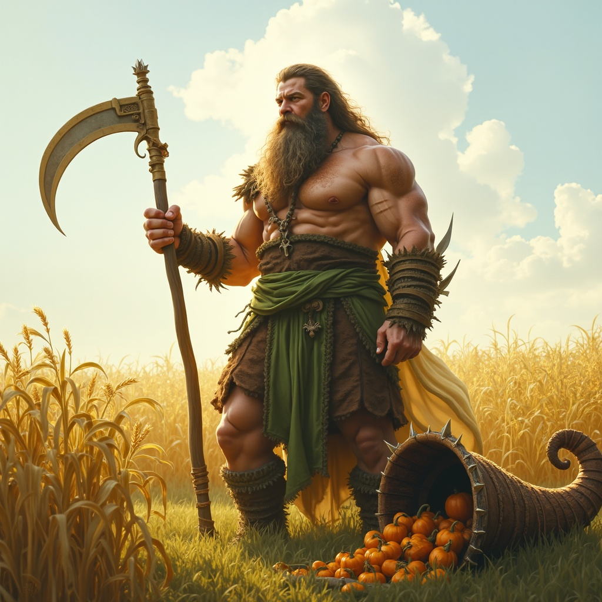
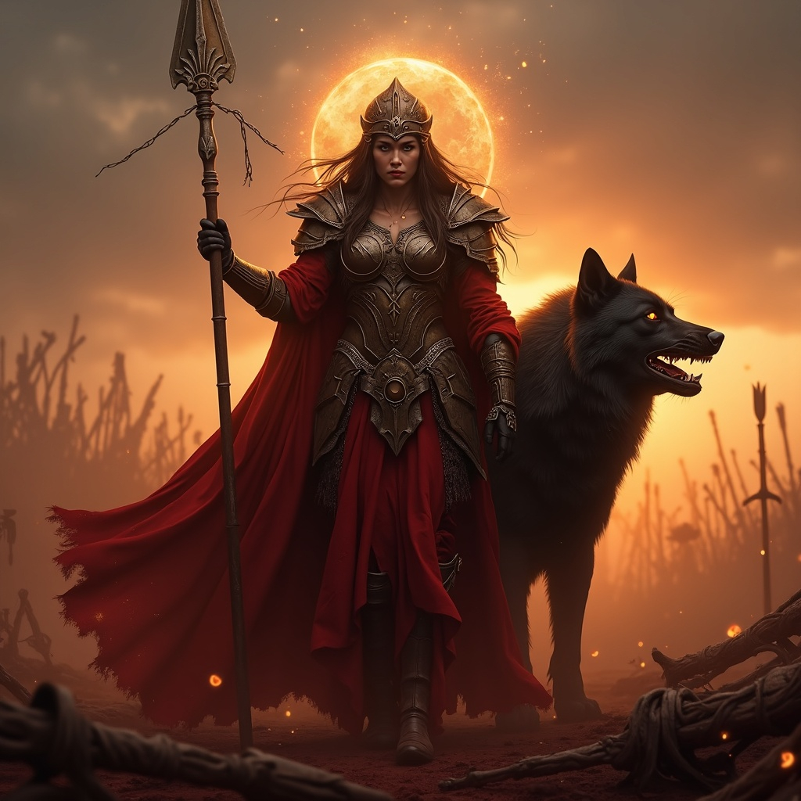
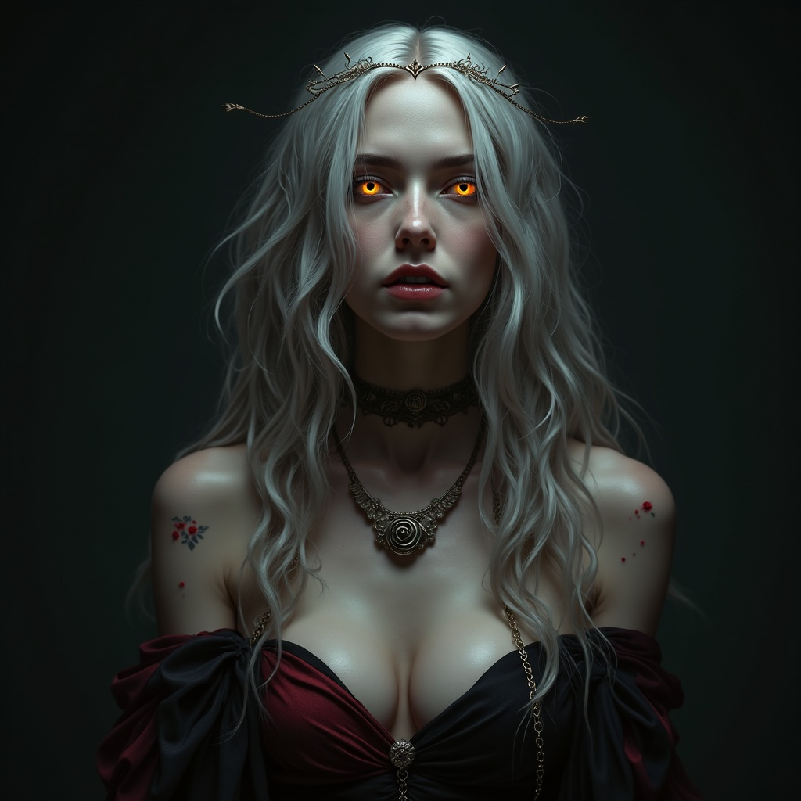
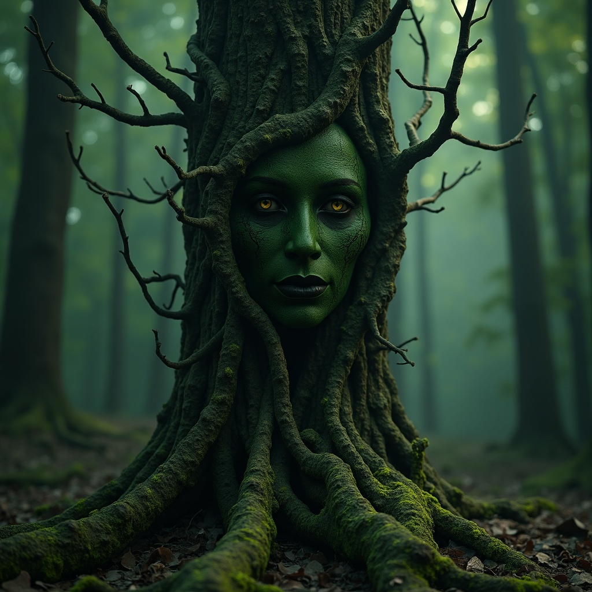
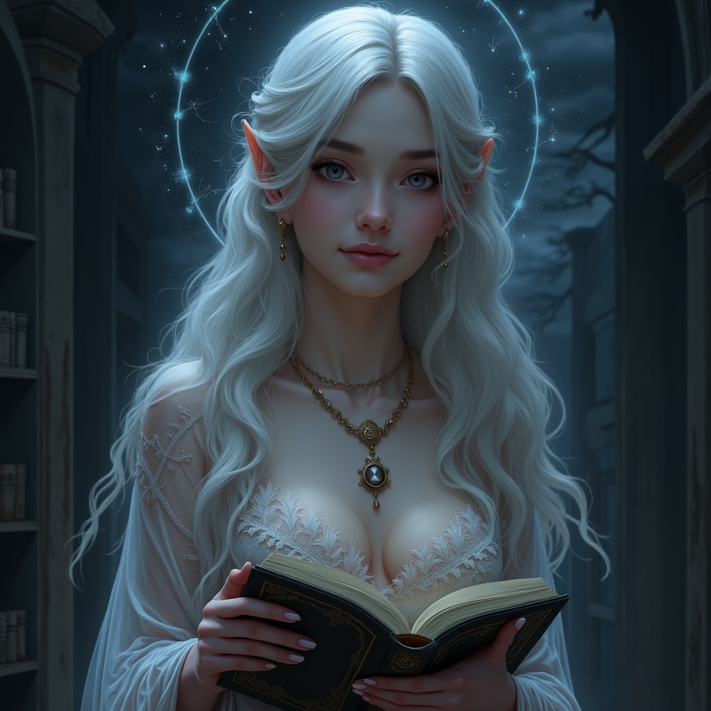
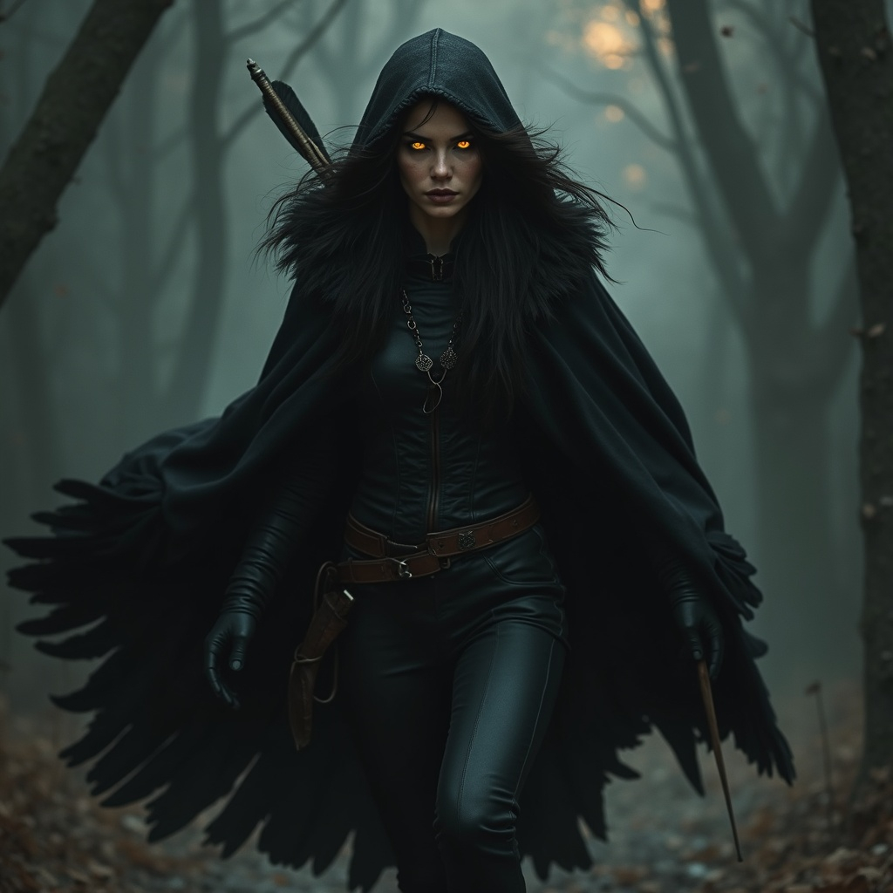

They walk among ruins and riches, memories and myths — gods who were once human. The Prir, known as the
Walking Gods,
are not born divine but become divine. Some ascended through great deeds or deep wisdom. Others stumbled into
godhood by sheer chance, cruel fate, or cosmic whim. A few were elevated as reward, others as punishment. The
universe, it seems, has a sense of humor.
No two Prir are alike. Some are benevolent protectors, lighting the way for their followers. Others are
unpredictable, vengeful, or wholly indifferent to mortal concerns. Some still whisper to their worshipers,
guide
kings, or stir the wind over battlefields. Others have vanished into silence, lost in their own eternity.
Yet all share one truth: their power is not infinite. It ebbs and flows with the devotion of those who
believe.
Worship is the lifeblood of a Prir. Shrines, prayers, songs, and sacrifices feed their essence. A forgotten
god is a
fading god. A beloved one burns like a star.
To understand the Prir is to understand the heights and failings of mortal existence itself — magnified,
eternal, and walking
still.
Chernabog
God of misfortune and corruption. Patron to the downtrodden
"I am not your punishment. I am what comes when you pretend the world is just."
Among all the Prir and twisted divines that haunt Skazka’s mythic past, Chernabog is the shadow cast by hope
itself. Once a forsaken mortal, cursed by fate or Kaos itself, he became god not by ascension, but through
corruption, hatred, and the mockery of divine pity. Chernabog is misfortune made incarnate: cold, inevitable,
and
patient.
Symbols
- The Blighted Eye: A cracked, blackened eye weeping ash—seen etched on cursed altars, hidden in
desperate
places.
- Withered Tree: Once lush, now hollow and lifeless. Often carved where misfortune lingers long.
- The Eclipse Halo: A black circle around a pale disc—an eternal reminder of his birth beneath a dying
sun.
Domains
- Misfortune: Wherever luck turns bitter and triumphs collapse, Chernabog walks unseen.
- Despair: Not raw destruction, but carefully sown ruin—turning hope to ash and bonds to blades.
- Corruption: He is not the chaos of Kaos, but its precision; a seed of rot planted in systems and
souls.
- Creation of Monsters: From his rage, he forged the orcs—brutal reflections of his own exile.
Rites
- The Mask of Ruin: Said to be worn by Chernabog when walking among mortals. It bears no eyes, only a
faint
smile. It is now a symbol worn by priests of this deity.
- Ashblade: A sword carried by his earliest orc warlords, forged from volcanic glass and regret. It
breaks
not bodies, but loyalty. Said to be used to ordain priests in to the ranks of Chernabog.
- The Thousand Whispers: A forbidden prayer spoken only by those who have lost everything. The prayer
does
not ask for aid — it asks for vengeance through entropy.
Lore
- The Founding of the First Orc: Beneath the Dead Peak, Chernabog shaped the first orc from stone, ash,
and raw will. He did not gift them purpose — he gave them anger. Their hearts burn with echoes of Chernabog’s
first scream.
- The Ashfall War: When the orcs flooded from his sanctum, no god knew where the tide would end. Cities
vanished beneath choking smoke. Chernabog himself never lifted a blade — he whispered, and kings tore down
their own
thrones.
- The Banishment: The Annarr, unified in fear, shattered Chernabog’s name, divided his orc legions, and
sealed his sanctum. For a thousand years his name was erased from stone, song, and prayer. But misfortune does
not
sleep.
- Worship & Fear: Chernabog is not worshipped openly. His name is muttered only by the
broken—prisoners,
the plague-touched, exiled warlords. Secret cults called The Hollowed Eye plant despair deliberately,
believing
that only ruin brings truth.
Herukan
God of song, memory and revelation. Patron to bards.
"Every silence is a cage. I do not break it—I sing until the bars forget they were meant to hold."
Born in the shadowed alleys of Varn Hollow under a blood moon, Herukan, a gnome with hauntingly large eyes and
nimble fingers, was sold to the Carnival of the Shrieking Bell by his parents who could not afford to raise him.
Amid cruelty and fractured instruments, he learned to
channel sorrow through his harp-like voice. One night, after a brutal beating, his lament awake a Shard of
Uzume, an
ancient fragment of song-power buried in nearby for thousands of years. The shard fused with his soul, and in
his next performance, time itself stopped. Herukan, through no choice of his own,
ascended and became god of song and emotional transformation — one who sings and the world obeys.
Symbols
- The Shattered Bell: A cracked handbell, often worn as a pendant. It represents the broken silence
Herukan shattered with
his song at the carnival of the Shrieking Bell. Worshippers never ring it—only wear it. To ring it is to beg
for a voice
in the silence of despair.
- “When silence hurts, I listen.”: Whispered creed of Herukan’s faithful.
- The Spiral Harp :An impossible harp whose strings spiral into infinity. Appears in murals and
frescoes. Used as an emblem by bardic orders aligned with Herukan’s truth-driven music.
- The Mask with No Mouth: A simple theatre mask with no mouth, only expressive eye slits. A symbol of
those who were never
heard. Carried by orphans, the exiled, and abused performers. When a follower sings
with it placed beside them, it’s said Herukan sings in harmony.
Domains
- Song & Emotion: His voice commands tears and ecstasy, weaving potent emotional resonance into all who
hear him.
- Memory & Loss: He gives form to grief, unlocks nostalgia, and binds memory with melody.
- Revelation & Truth: In his harmonies, hidden truths surface; lies unravel to silence.
- Veil & Inter-Realm Chorus: Herukan bridges realms, warping reality through sound.
Rites
-
The Blood-Moon Lament: During lunar eclipses, gnome bards perform low dirges in acoustic chambers. As
tears flow, they believe Herukan listens — rekindling empathy in a world grown harsh.
-
Carnival’s Silence: Displaced performers hang broken instruments at doorways. Once silent, they are
never played again — tokens of respect for
the night Herukan’s song turned sorrow into cosmic pause.
-
Shard-Adaptive Hymn: melodies are sung in layered counterpoint until the air quivers. When done
correctly, singers claim to feel doorways open beyond mortal perception.
Lore
- The Night of the Eclipsed Strings: Long after his ascension, Herukan returned in secret to Varn Hollow,
wearing the Mask with No Mouth. The city had outlawed music—its ruler fearing that melody might stir rebellion. On
the night of a rare double eclipse, Herukan stood beneath the gallows where the last street-bard had been executed
and plucked a single note on an unseen instrument. The sound did not reach ears—it reached memories.
Every soul in the city remembered their first song, their first dance, their first whispered lullaby. The silence
laws shattered not through protest, but through an uncontrollable chorus as every citizen began to hum at once. It
is said the ruler tore out his own tongue that night, unable to bear the truth Herukan’s note had forced him to
face.
-
The Seven Harmonies of Forgetting: In the Age of Glass Thrones, a great plague spread—not of body, but of mind.
Victims lost their memories, living as hollow shells. Desperate healers turned to Herukan’s followers, who recalled an
ancient rite known as the Seven Harmonies of Forgetting. Paradoxically, the cure came not from restoring memory, but
by letting go of pain so deep it shackled the mind.
For seven nights, masked choirs sang each harmony, one per night, while walking through the streets with Shattered
Bells around their necks. Each harmony dissolved a layer of sorrow until, on the seventh night, the afflicted awoke
with tears on their faces, able to recall their names once more. They had not recovered all their memories—only the
ones worth keeping.
-
The Harp that Caught the Sky: Bardic tradition speaks of a single performance in the Court of Dawn when
Herukan, challenged by a rival god of silence, strung the Spiral Harp with threads of light pulled from the morning
sun. Each note captured a fragment of the sky, and with every chord, stars appeared where there should have been
daylight. The god of silence, unprepared for beauty that did not require words, withdrew from the mortal realm for a hundred
years. Followers of Herukan still believe that on certain mornings, if you look closely at the sunrise, you can see
faint spiral strings reaching upward, resonating with the echo of that impossible performance.
Mortifer
Lord of murder and ambition. Patron to assassins and serial killers.
“A blade, a name, a silence. This is his prayer.” — from the banned Velkarian Catechism of Knives
Mortifer was born beneath the counting-houses of Velkaria, ignored even by his own lineage. He watched as
brothers
inherited, sisters were adored, and his father spoke only of legacy — never his. His first kill was not rage,
but
experiment. The next, calculation. Then came artistry. As the bodies fell and his family's line crumbled,
Mortifer’s
name rose like smoke over a ruined ledger. But even wealth and titles could not still his hunger. He turned to
the
forbidden: blood sorcery, exile-born rites, the carving of power into flesh.
On a night soaked in red moonlight, Mortifer killed the city’s entire merchant council — thirteen blades,
thirteen
names, thirteen deaths in one breath. When dawn broke, he stood alone amidst chaos, not merely feared but
revered. The
divine took notice — not to bless him, but to acknowledge him. With each murder done in ambition, his essence
deepened.
With each assassin’s whisper, his shadow lengthened.
He is now worshipped in silence, invoked without voice. No church dares claim him — and yet every assassin,
every
traitor, every power-hungry soul knows his mark. He is the god of murder not as madness, but as method.
Symbols
- A nod and a wink: A blood-slick dagger plunged into a coin; this is the calling card of those who
serve Mortifer.
- A dire warning: a severed hand clutching thirteen black threads; this is the symbol which indicates
refuge is close-by for those who follow the Lord of Murder.
- Guess whose coming to dinner: a tarot card with a red crescent moon biting through darkness; a gift
given to those a devotee intends on killing.
Domains
- Planned to perfection: Mortifier is not just about murder, but murder which is planned immactulately.
- Slay thy borother: ambition above everything else. Even family should not be above scheming.
Rites
- The Rite of Thirteen: A ritual killing involving thirteen symbolic elements — thirteen blades,
thirteen heartbeats, thirteen names whispered. Said to draw Mortifer's gaze directly and confer dark favor or
protection in exchange for the killer’s own soul fraying.
- Velkarian Marking: Practitioners slice the rune of Mortifer — an angular glyph resembling a dagger
through an eye — into their skin before committing a murder-for-power. Done properly, the mark never scars,
only deepens.
- The Crimson Silence: A vow taken by assassins, never to speak of the act once done. Each broken vow
supposedly awakens a fragment of Mortifer within, leading to madness or worse — divine possession.
Lore
- Mortifer was not born divine: he proved himself divine. In the mercantile sprawl of Velkaria, where
merchants bartered souls and family was priced in ledgers, he was a forgotten child: the seventh son, the
unmentioned heir. But Mortifer did not beg for legacy. He seized it, body by body, crime by crime, blade by
blade. His murders were not acts of madness — they were assertions of order, deliberate, ritualistic,
inevitable.
- He rose by subtraction: thinning the world of his rivals until only he remained. The gods took notice
when mortals fled from his shadow rather than from theirs. They watched as he carved divinity into himself —
not through worship, but through work.
- He has no temples, only scenes of crime
: His sermons are written in bloodstains. His hymns are
final breaths.
- The Ledger of Unspoken Names: A tattered book said to list every name Mortifer has claimed. No ink,
only impressions — names felt rather than read.
- The Dagger of Final Inheritance: A black-bladed relic believed to be the very knife used to slay the
merchant council. It thirsts audibly when near betrayal.
- The Silence-Bound Psalms: Etched onto bone, readable only under blood-moonlight. Reciting one is said
to hide a murderer from all gods — save Mortifer.

Agos
God of farming, agriculture and the seasons. Patron to farmers and anyone who works on the land.
“Turn the soil with respect, for every furrow is a promise. Tend with patience, reap with gratitude, and know that what you take today you must give back tomorrow.”
Agos, the hulking god of farming and agriculture, stands as a sentinel over the soil and its stewards. Often
portrayed as a muscular, earth-streaked farmer wielding a broad scythe, he embodies the sweat and strength
required to coax bounty from the land. He was especially revered by the Sken, the hardy folk who migrated from Skia to Kelos
centuries ago, bringing with them veneration for Agos and integrating his worship deeply into their agrarian
culture.
Symbols
- Scythe: A broad, curved blade used for harvesting, symbolizing both the cutting of ripe crops and the
severing of blight.
- Cornucopia of Grain & Gourd: Often seen at his feet, representing the harvest’s abundance and the
nourishing cycles of growth.
- Oxen yoke: Symbolic of strength, partnership between man and beast, and the burdens borne for a
fruitful yield.
- Green-and-Brown Robes:: His garments are dyed in the soil and sprout-green hues, a living tapestry of
earth and growth.
Domains
- Agriculture & Harvest:: Patron of sowing, tending, and reaping—seasonal cycles are his domain.
- Soil and growth: Oversees fertility, irrigation, and the unseen work in the earth.
- Labour and strength: He honors toil, diligence, perseverance; the very bones of a farmer echo his
divine essence.
- Cycles of decay and renewal: Agos embraces that every harvest is tied to death and rebirth—stubble
fields feed renewal.
Rites
- Breaking the first furrow: At spring’s first plowing, farmers dedicate the fresh earth, sprinkling
seed and wine at Agos’s shrine, invoking his blessing.
- Mid-Summer Scythe Blessing: Villagers ceremonially sharpen scythes and pass them near a hearth fire,
offering tobacco or sweet grain to ensure a swift harvest.
- Harvest Feast (“Agos’ Abundance”): A communal celebration at harvest’s end with bread shaped like
earthen mounds, singing of toil and thanks, and the first sheaf carried in procession to the temple.
- Stubble blessing: After harvest, participants leap over burned stubble while singing an old chant to
cleanse any lingering pestilence.
Lore
- The Sken Pilgrimage: Legend tells of a migration from Skia to Kelos, where floods and famine once
struck the early Sken settlements. A humble farmer named Khelan prayed to Agos, and by sunrise, the clouds parted,
revealing fertile land. The Sken built an altar on a grassy ridge where Khelan first sowed seed in Kelos, and
for generations, every new settlement began with that same rite.
- The Tale of the Iron Field: A rich landowner, hoping to expand his domain, cursed a field, believing
he could control Agos’s bounty with iron spikes. Crops failed, cattle sickened, and his family fell into
despair — until a peasant girl, Marisa, removed the spikes and reburied them deep in the earth. With that act of
humility, Agos restored the field, teaching that reverence outweighs dominion over the land’s spirit.
- The Trials of the Green Scythe: Agos once walked as a mortal among farmers, testing their hearts. He
lent a green-hilted scythe to three brothers, instructing them to harvest their own plots. The first two
brothers ignored the soil’s needs and cut swiftly — the yield was poor and blighted. The youngest brother, however,
cleaned the field, prayed for the blade’s guidance, and worked patiently. When he finished, his scythe glowed
with verdant light and his yield overflowed. Agos revealed himself, granting the farmer lifelong
protection—and.
Silithus
God of deception and secrets. Patron to spies and illusionists.
“Trust not the silver tongue that weaves such honeyed lies, for beneath each word lies another face.”
Silithus, once a mortal of striking beauty and cunning wit, ascended to divinity through Kaos’s dark grace.
Whispers say his ambition caught the primordial’s eye — Kaos saw in him the perfect vessel for deception. Now known as
Silithus, God of Lies and Deception, he presides over secrets, illusions, and the art of masks. Though remarkably
charismatic, half of his visage is scarred by holy flame — a cruel reminder of his former humanity and the powers he
wields.
Symbols
- Two-faced mask: One side smooth and serene, the other grotesquely burned—symbolizes duality of truth and
falsehood.
- Burned Quill: An inkwell’s feather scorched at the nib, emblematic of writing false deeds and signing
secret pacts.
- Serpentine key: A twisting key said to unlock doors of perception and deceit.
Domains
- Secrets & Espionage:: Guardianship over hidden truths and clandestine networks.
- Deception and illusion: The forging and weaving of lies.
- Masks & Transformation: Facilitating literal and metaphoric shape-shifting.
Rites
- Veiling the truth: Spies and informants gather under moonlight, each donning dual masks—half pristine,
half charred—to honor Silithus’s fractured face. A contract is written in disappearing ink; once read and bound,
participants whisper their secret lies into a copper bowl and burn the text, sealing their deceit.
- Trial by mirror: Initiates stand before smoky mirrors recounting their greatest falsehood. The mirror’s
surface cracks if the deceit is profound, revealing a deeper hidden image beneath.
- Embrace the flames: In sacred temples, acolytes hold live candles to half their own faces; the wax burns
symbolize solidarity with Silithus’s scarred half and devotion to truth’s darker twin.
Lore
In his mortal life, Silithus was a nobleman renowned for beauty and charm, celebrated for his hypnotic eloquence.
But envy bred ambition — his hunger for influence led him to trafficing in court intrigue, spreading whispers that
toppled kings and built his own power.
When Kaos observed these machinations, he deemed Silithus a kindred spirit and offered divinity. The ceremony was
brutal: the flames of Kaos engulfed half of his face, searing flesh and binding his soul to primordial deceit.
Though scarred, Silithus emerged divine, eyes now glimmering with infinite cunning.
As a god, he built an empire of shadows: secret guilds, spy networks that stretch across realms, and hidden temples
behind false walls. His followers include intelligence brokers, master spies, illusionists, and those who thrive in
the murk between truth and lie.
Yet Silithus remains a paradox. While he champions lies, he values honesty among his own — betrayal within his cult
is punished worse than death. They say he can read truth through silence, unraveling the most elaborate deceptions
with a single glance. His temples are silent labyrinths where whispered secrets echo eternally; those who wander in
uninvited often unravel their own minds.

Leonarah
Goddess of war, conflict and battle. Patron to soldiers and gladiators.
"Steel breaks, flesh rots, but the will to stand is eternal — fight, and I shall know your name."
Leonarah was born daughter of Aderion Vey, a merchant-lord whose
caravans brought silk, gold, and rare ironwood across half the known world. Her childhood was gilded, her days
filled with
the music of foreign minstrels and the scent of cinnamon from far ports. But when civil war split the empire
in two, her father refused the Emperor’s summons, sending neither coin nor sword to the throne. For this defiance,
he
was executed in the public square, his body left for the carrion birds. Leonarah’s ancestral manors were seized, her
ships burned, and she herself sold into the slave pits of Virethane. There, in the blood-soaked sand, she learned
the
art of killing, rising from a nameless captive to the arena’s undefeated champion, called The Crimson Mantle for the
cloak she wore woven from her own fallen foes’ banners. Her fame grew until whispers reached the palace itself —
whispers of a warrior who fought like a storm given form. On the day she faced the Emperor in his private arena, her
spear found his heart, ending his reign. But as prophecy had long foretold, her victory demanded the price of her
life; she fell moments later, her blood mingling with his upon the marble floor. In death, the gods of strife
claimed
her, and the people began to pray to Leonarah — the mortal who defied an empire, now immortal patroness of warriors
who rise from ruin to glory.
Symbols
- The Crimson Mantle: A blood-red cloak draped over a spear or sword.
- Split Helm: A war helmet with a deliberate crack down the center, symbolizing both destruction and
resilience.
- Wolf-and-Sun Emblem: A wolf’s head with the sun rising behind it, representing ferocity tempered by
glory.
- Three Arrows Bound with Twine: Signifying unity in arms — an unbreakable band of warriors.
Domains
- War & Battle: The clash of armies, the roar of combat.
- Conflict & Rivalry: From personal duels to feuds between kingdoms.
- Honor & Valor — Glory earned through courage, even in defeat.
- Blood Pacts & Oaths: Binding promises made in the heat of strife.
- Death in Battle: She claims the souls of the fallen who die with weapons in hand.
Rites
- The Oath Before Dawn: Before battle, warriors face the rising sun, touch their weapons to their foreheads,
and swear to fight with honor.
- The Bloodmother’s Feast: After victory, soldiers offer the first cut of roasted meat to Leonarah, placing
it upon a stone altar or burying it at the camp’s edge.
- The Rite of the Last Stand: When defeat is inevitable, her faithful fight in a tight circle formation until
none remain, believing Leonarah will lead their spirits to her hall.
- The Broken Blade Ceremony: When a warrior retires, they break their sword and cast half into a river,
symbolizing the end of their service to Leonarah. The other half is kept as a family heirloom.
Lore
-
The Wolf at Her Side: She is often depicted with Vorgath, a great black wolf who feeds on the fear of her
enemies.
-
The Hall of the Unbroken: Those who die in battle with courage are brought to her hall, where the dead fight
in endless contests, each dawn bringing fresh scars and fresh glory.
-
The Duel of the Gods: She once fought the Sea God, Morthain, for seven days upon the beaches of the Storm
Coast; her blood turned the tide red for generations, and the place is still sacred to her worshippers.
-
Her Whisper in Battle: It is said that the moment before an army breaks, Leonarah’s whisper can be heard —
those who hear it either find impossible courage or fall into despair, depending on their worth.

Surrana
Goddess of love, sex and pleasure. Patron to whores and strippers.
"I give the world my body, but my heart is mine alone—beware what you think you own."
They say Surrana was once the most desired courtesan in all the realms, her beauty so sharp it cut kings and beggars
alike. Yet desire is a fickle thing, and when she spurned the advances of a high priest, he cursed her with a hunger
that no touch could sate. For years, she wandered through flesh and passion like a starving wolf, until the night she
found herself at a shrine to some long dead power. Silently, she offered it the last thing she owned — her mortal soul —
if only to end her pain. Whoever or whatever it was accepted the gift. In return Surrana
no longer worshiped love — she was love, and lust, and the ruin they bring.
Symbols
- The silver lash: A curved whip coiled in a heart shape, symbolizing both pleasure and pain.
- The twin candles: Two black-and-red candles intertwined, representing desire and temptation.
- The blooded rose: A rose dripping crimson, signifying passion that wounds as much as it delights.
Domains
- Desire: The irresistible pull of longing, whether for love, lust, or power.
- Pleasure and pain: The duality of ecstasy and torment, often intertwined.
- Seduction and secrets: Forbidden knowledge and manipulation, the hidden power behind attraction.
Rites
- The Midnight offering: Devotees leave tokens of beauty, jewelry, or perfume on an altar and whisper a secret they dare not tell anyone else.
- The kiss of shadows: Initiates embrace a stranger in darkness, seeking the thrill of temptation without knowing the partner’s identity.
- The lash and bloom: A ritual using light pain, like pinches or a gentle whip, paired with offerings of flowers or honey to invoke balance between pleasure and suffering.
Lore
-
Surrana once walked the mortal world as a courtesan, whose beauty and wit made kings crumble and priests curse. Her ascension was sealed when she consumed the essence of a forgotten god of ecstasy.
-
It is said that Surrana’s favor can make a heart burn with desire or twist it with obsession—her touch is blessing and curse alike.
-
Legends tell that those who worship her openly invite temptation into their homes; mirrors in a Surrana shrine are said to reflect not the body, but the deepest longing of the soul.
Cormarin
God of pain and self-loathing
“Let them betray you, let them scorn you; I dwell not in their mercy, but in the hollow echo of their regret. Pain is my altar, and self-loathing my crown.”
Once a cunning archdevil in the infernal hierarchy, Cormarin’s mortal origins are shrouded in rumor, whispered in
dark corners of the planes: he was a man who first tasted the sting of betrayal and, in that crucible, discovered a
hunger for power stronger than loyalty. In life, he wove schemes so intricate that even his infernal masters envied
them, but his ambition outstripped his cunning—he sought not servitude but dominion. Cast from the Nine Hells for
plotting to enslave a legion of devils, his soul, fragmented and burning with resentment, seeped into the dreamscape,
twisting itself around mortal fears and sorrows. Each whispered nightmare, each sleepless night, fed his essence until
mortals began to feel his presence even when asleep. Pain and self-loathing, once personal afflictions, became divine
instruments, and through the collective anguish of those who scorned his followers, Cormarin ascended—not through
worship, but through the very suffering he had mastered, forging a god from a devil and a man’s darkest torment.
Symbols
- A shattered mirror dripping black liquid: representing self-loathing reflected outwards.
- A twisted thorned crown: the bitter reward of ambition and pain.
- A skeletal hand clutching a heart aflame: the duality of suffering and obsession.
Domains
- Pain: both physical and emotional suffering, the core of his influence.
- Nightmares: control over dreams, visions, and the terror within sleep.
- Betrayal: the divine embodiment of broken trust and ambition turned inward.
Rites
- The Vigil of Shadows: followers fast for three days while meditating in darkness, offering their personal regrets to him in whispered prayers.
- Blooded Reflection: initiates scratch a mark in the shape of a thorned crown onto their skin, channeling physical pain into spiritual devotion.
- Nightmare Communion: a ritual where worshippers sleep in a sacred circle, willingly inviting Cormarin into their dreams to glean visions of enemies’ weaknesses or truths about themselves.
Lore
-
It is said that anyone who dies in a state of self-loathing may find their soul pulled to the Nightmare Plane, where Cormarin offers them the choice to serve him or be eternally tormented by their own regrets.
-
Legends claim that entire cities once fell into despair because Cormarin cursed their dreams after their leaders betrayed his mortal followers, leaving waking terror as his silent, divine judgment.
-
Some scholars whisper that Cormarin still harbors a fragment of his mortal ambition, plotting through dreams to one day reforge himself into a being capable of returning to the material plane, not as a devil, but as a god of fear incarnate.
Sylka
Goddess of thievery and secrets. Patron to rogues, assassins and spies.
“Secrets are not treasures to be kept—they are keys, and I am the hand that turns them.”
Once, she was a shadow among shadows, a mortal thief whose fingers stole coin and whispers with equal ease. One night, chasing a secret rumored to unmake kings, she found herself at the edge of a forgotten temple, where a dying god murmured riddles of power and oblivion. Desperate, she offered him her life in exchange for mastery over the unseen, and he laughed—knowing death alone could not bind her cunning. When she claimed his final breath, the world fractured beneath her will, and the shadows she had once walked through began to bend and whisper to her. In that fracture, mortals no longer bound her; she became the goddess of secrets and thievery, the patron of those who move unseen, her eyes always gleaming with the thrill of stolen truths.
Symbols
- A shadowed dagger entwined with a serpent: representing silent strikes and hidden knowledge.
- An open eye half-covered by a mask: the duality of revelation and concealment.
- Three interlocking keys, one black, one silver, one blood-red: mastery over all secrets, mortal and divine.
Domains
- Shadows and concealment: the unseen places where truths hide and plans are forged.
- Secrets and knowledge: forbidden lore, hidden histories, and whispered promises.
- Deception and theft: the subtle art of taking what others cannot protect or perceive.
Rites
- The silent pilfer: followers steal a single insignificant item at night, offering it to her altar to gain favor in secrecy or cunning.
- Whispered pact: a vow of silence spoken in a hidden place, sealed by the sharing of a personal secret with the goddess.
- Shadow marking: a ceremonial tattoo of her serpent-dagger symbol, inked under the moon, to mark a devotee as her chosen agent in the mortal world.
Lore
- It is said that the first coin she ever stole as a mortal glimmered with divine fire—an omen that she was destined to take more than mere gold.
- Legends whisper that she sometimes appears as a beggar or masked merchant, quietly tipping the scales of fate for rogues and kings alike.
- Those who betray her secrets or misuse the knowledge she grants often vanish into shadows, never to be seen again, their stories only whispered in fear.

Than
Champion of the wood and nature's avenger. Patron and protector of Ku'Than.
"Let the trees bear witness, for those who scar the sacred earth shall find no mercy in my shadow." —
Than
Than, the ancient and enigmatic forest deity of Skazka, is a primal force of nature whose worship predates most
known religions in the world. Revered almost exclusively within the mysterious woodland realm of Ku’Than, Than
embodies the untamed spirit of the earth, meting out merciless vengeance on those who defile the sacred Elden
Wood.
Oft depicted as a horned figure with a face that communes through trees, Than’s presence is deeply felt rather
than
widely seen. Her priests and priestesses, known simply as Witches, are nurtured from childhood and tested
through a
brutal rite of survival before earning their place as guardians of the forest. Governed by the secretive Council
of
Than and led by High Witch Serona, the people of Ku’Than live in harmony with nature’s harsh order, believing
their
living forest to be both sanctuary and sentinel — perhaps even a prison to some ancient force. Outside their
dark
and
shifting woods, Than’s influence is rare, yet when a Witch emerges, it is a sign that something of great
consequence
stirs within the green heart of Skazka.
Symbols
- A Branched Tree with a Face: Explicitly described as her holy symbol, this image captures her
communion
with followers through the forest itself and reflects her embodiment of the sentient wilderness.
- Antlers: Than is often depicted with antlered horns, symbolizing primal power, wilderness, and her
kinship with untamed creatures.
- Twisted Vines or Roots: Representing the deep, binding force of nature and the hidden strength
beneath
the surface, they may also reflect the inescapable reach of her influence.
- The Forest Itself (Elden Wood): Not a traditional symbol, but emblematic of her essence—living,
shifting,
ancient, and sacred. Stylized forest motifs or silhouettes might appear in her iconography.
- Tree Bark Mask: Worn by her followers, this might symbolize the merging of identity
with the forest and Than's spirit.
- Coven Rings or Interlocking Circles: Representing the sacred bonds between witches and their
apprentices,
and the unity (and fatal link) within her faithful.
domains
-
Nature: Central to her worship, Than is deeply tied to the forest, the earth, and the preservation of
the
natural
world. Her followers revere untouched wilderness and act as its fierce protectors.
-
Vengeance: Than is described as uncompromising and intolerant of those who defile nature. Her Witches
actively seek
retribution against violators, suggesting this as a core aspect of her divine power.
-
Mystery or Secrets: The shrouded, ever-shifting forest and the little-known inner workings of Ku’Than
point
to a
domain over secrecy, hidden knowledge, or the unknown.
-
Fate or Trials: The demanding trials for becoming a Witch, and the idea that not all survive, may hint
that
Than
oversees tests of worth, destiny, or the forging of strength through adversity.
Rites
-
Rite of the Verdant Covenant (Initiation of Witchlings): This rite begins when a child is accepted into
the
path of Than.
The Weird (mentor Witch) performs a secretive ritual
at a sacred glade, marking the child with earth and sap to symbolize their rebirth into the forest’s will. The
child
is introduced to the spirits of the woods, often through dream or trance induced by herbal smoke, and given a
seed
to
plant — their first pact with Than.
-
Trial of Root and Shadow (Coming of Age)
At the age of maturity, Witchlings undergo a solitary survival ordeal: one year and one day alone in the Elden
Wood.
During this time, they must endure its dangers, earn the forest’s respect, and avoid becoming prey to both
beast
and
spirit. Survival is seen as Than’s personal approval; failure often means death — or worse, transformation
into
something unnatural.
-
Than'Dva (Witch-Pairing Ritual): Upon becoming a full Witch, the initiate is ritually bound to a
covenant-partner in a ceremony within a sacred cave known as the Sanctuary of Revelations.
The two Witches, naked and submerged in the pool, must share their most intimate secrets. They are then
visited by
the spirts of their ancestors who bless
and sponsor the bonding. Their fates are joined, their lives entwined — one cannot survive the other’s death.
-
The Vengeance Harvest: When someone defiles the forest, a coven may perform this rite under moonlight.
Witches gather around a tree bearing a
face of Than and invoke her fury through chanting, blood-letting, and binding effigies made from the
violator’s
discarded items. The rite often precedes a hunt — literal or spiritual — in which nature exacts retribution.
-
Rite of the Twisting Paths (Divination): This secretive rite is used to commune with Than or seek
guidance.
A Witch enters the forest alone,
ingesting sacred herbs, and follows an animal or tree spirit until a vision is granted. The forest itself
becomes
the altar, the voice,
and the veil between worlds.
-
Burial by the Roots: When a Witch dies, their body is not burned or entombed but returned to the
forest.
They are buried in fetal position
beneath a young sapling, believed to carry their spirit forward. A mask or symbol of their covenant may be
hung
from
the branches, marking their passage and presence in the trees.
lore
-
The Withering of Seroth Hollow: Long ago, on the western edge of the Elden Wood, there was a thriving
lumber village called Seroth Hollow. Nestled
dangerously close to the border of Ku’Than, its people grew bold with their axes and trade, felling ancient
trees
whispered to be older than the gods. Despite warnings etched into bark, the villagers pressed deeper into the
sacred
groves.
One night, the forest went silent. No wind, no birds, no life. The next morning, Seroth Hollow was gone. Not
burned, not razed — gone.
In its place, a hollow depression in the earth stretched like a wound, filled with twisted roots that groaned
with
the
sounds of human voices. The only sign of the village was a single, towering tree in the center, its bark
etched
with
dozens of human faces frozen in expressions of terror. The Witches of Than call it The Tree of Regret, and
they
say
each face is a soul bound to bark for eternity — not dead, not alive, but listening, eternally aware, feeding
the
tree’s
hunger for vengeance.
To this day, no birds fly above that place, and no creature sets foot there. Familiars warn Witchlings never
to
approach it alone, for the tree whispers in the voice of those it has consumed, calling for help in familiar
tones. Some who
answer never return. Others do — hollow-eyed, their voices splintered and sap dripping from their mouths.
It is said that the Tree of Regret is a fragment of Than’s wrath made manifest — a punishment not for one
crime,
but
for forgetting that the forest is older, crueler, and more sacred than man will ever be.

Ioun
Goddess of knowledge and divination.
“Do not seek certainty in what lies ahead—seek clarity. The future is no stone path, but a river: it bends, it breaks, it floods. To know is not to master, but to choose where you will stand when the waters rise.”
Some say Ioun’s ascension began not with ambition but with desperation. As a mortal priestess, she served in a crumbling world where time itself was unraveling, the sky bleeding into tomorrow and yesterday. In her search for answers, she uncovered a fragment of forbidden scripture that spoke of Cronos, the Titan of Time, imprisoned beyond the veil of mortal reckoning. When she dared to read the words aloud, she caught his attention—not with worship, but with comprehension. Cronos touched her mind to test if she could bear a glimpse of eternity, and in that instant she ceased to be wholly human. Her flesh unraveled into thought, her heartbeat into memory, and when the transformation ended, she stood as something more: the keeper of knowledge and seer of what may come, no longer bound by the thread of time she once feared.
Symbols
- The shattered hourglass:Sand spilling upward as much as downward, representing her mastery of past and future as one.
- The open eye in a tome: A stylized eye drawn upon a half-open book, symbolizing insight through study and revelation.
- The spiral of stairs: A curling pattern of constellations, said to reflect the infinite pathways of fate.
domains
- Knowledge and memory: She preserves what would otherwise be forgotten, holding the wisdom of mortals and gods alike.
- Divination and fate: Her gaze pierces veils of time, offering glimpses of what may come — though never with certainty.
- Ruins and lost truths: Her followers scour fallen civilizations and forgotten places, believing her presence lingers where the past has crumbled.
-
Rites
- The vigil of the lamp: Devotees keep a lamp burning from dusk until dawn while reading aloud from old texts, inviting Ioun to grant sudden flashes of insight.
- The casting of shards: Fragments of broken glass or crystal are scattered on cloth, their patterns interpreted as visions or omens.
- The rite of whispered names: Followers softly speak the names of ancestors and forgotten figures into the night air, offering memory as sacrifice to keep the goddess strong.
lore
- Legends say Ioun never spoke again after Cronos touched her; all her words are now carried as whispers in the dreams of seekers.
- It is told she still walks the ruins of dying worlds, leaving cryptic writings on stone walls for those wise enough to find them.
- Myths warn that every true revelation from Ioun comes with a hidden cost: knowledge exchanged for memory, certainty purchased with doubt.

Lunica
Lunica is the goddess of shapechangers, hunting and betrayal. At endless war with her brother, Mani.
“Trust is the sweetest meat, and I always strike when the heart is fullest.”
Lunica was said to be a huntress who thrived not by strength, but by cunning. Some stories claim she betrayed her hunting band, shifting her form into wolf, crow, and shadow to escape their vengeance. Others whisper she discovered the “true names” of beasts and men, allowing her to wear their flesh like a cloak. When she betrayed her final kin—her own brother Mani—Cronos or another cosmic power marked her with divine wrath, but instead of punishment, the mantle of divinity clung to her treachery. Now she hunts across worlds, ever-changing, ever-hungry, locked in endless war with Mani, who curses what she consumes and protects those she would betray.
Symbols
- The Twin-faced mask: One face serene, one snarling, representing her duplicity and her ever-shifting nature.
- The Broken arrow: A hunter’s weapon snapped in two, a symbol of both pursuit and betrayal.
- The Serpent in wolf's hide: A snake coiled within the outline of a wolf, symbolizing deception hidden beneath power.
Domains
- Shape-shifting and trickery: Patron of those who wear many faces, from hunters to assassins to liars.
- The hunt and predation: Goddess of pursuit, hunger, and the thrill of stalking prey.
- Betrayal and treachery: Her power thrives in broken oaths, deceit, and knives in the dark.
Rites
- The offering of skins: Hunters and shapeshifters leave animal pelts or masks at her shrines, hoping to gain her blessing in disguise or pursuit.
- The silent feast: ollowers gather, eat in absolute silence, and leave one seat empty for Lunica, symbolizing the ever-present possibility of betrayal.
- The rite of shattered bonds: A follower ritually breaks an item once shared with another (a ring, a weapon, a keepsake) as an offering to invoke her power of severed trust.
Lore
- Some myths say Lunica betrayed Mani in life before godhood, stealing his prey and twisting his curses back upon him, which began their eternal feud.
- It is believed she wears a different form each night, and anyone met in the wild after dusk might be Lunica in disguise.
- Her eternal war with Mani is said to keep the balance between betrayal and consequence, hunter and hunted.
Mani
Mani is the god of the cursed, curses, damned and downtrodden. Eternally at war with his sister, Lunica.
“I am the breath of every oath broken, the wound that festers, the shadow that never heals. Call to me, and I will answer.”
Mani was once a man broken by betrayal — some say Lunica’s betrayal, others say the world’s. He was marked, cast aside, left to die, but instead of death, the curses of the forsaken rose around him like a crown. He took them all upon himself — the hatred of the abandoned, the rage of the maimed, the despair of the downtrodden — and with them, he became something more than mortal. If Lunica ascended through the power of betrayal, Mani ascended through the agony of survival. He is the eternal victim turned eternal avenger.
Symbols
- Crown of broken links: A circlet made of snapped chain segments, signifying the weight of oppression and the wrath that follows when bonds are shattered.
- The stitched eyelid: An eye sewn shut with black thread, emblem of curses that blind, bind, and silence — and of the world’s refusal to see the downtrodden.
- The ashen brand: A ring of concentric scar-marks around a hollow center, like a burn that never heals; used as a curse-seal pressed into wax, skin, or stone.
Domains
- Curses and hexes: the spoken word that poisons, the mark that lingers.
- The damned: patron of the broken, the chained, the betrayed.
- Vengeance through suffering: pain turned into power, affliction wielded as retribution.
Rites
- The broken tongue: A curse is carved or written onto an object, then shattered, releasing Mani’s spite upon its target.
- Chains of the forsaken: Worshippers bind their own wrists with rope or iron while chanting their grievances, offering their suffering as tribute.
- The curse feast: A ritual meal is left to rot deliberately, then buried or burned, symbolizing the devotion of the lowly to Mani’s endless hunger.
Lore
- Every scar and wound Mani bears is said to be the curse of a mortal made flesh, carried by him so their suffering might echo forever.
- He is locked in eternal war with Lunica, not only because she betrayed him, but because every betrayal feeds his power.
- Those who suffer injustice or cruelty whisper prayers to Mani, believing that curses spoken in his name always find their mark.
×